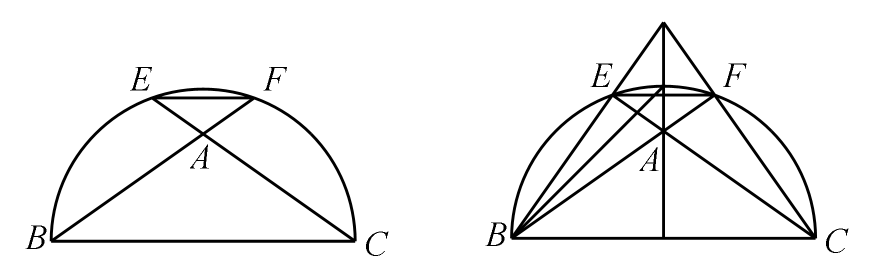

分别延长 BA、CA，交半圆于 F、E。由等腰三角形关于 BC 中垂线对称，E、F 的高度相同，故 EF∥BC。
作图步骤
作直线 BE、CF，交于 K。K 与 A 均在对称轴上，直线 KA 与半圆交于 T，T 为半圆弧中点。
弧 TC 是四分之一整圆，所以 ∠TBC＝45°。只需连接已有点、延长直线并标记交点。

分别延长 BA、CA，交半圆于 F、E。由等腰三角形关于 BC 中垂线对称，E、F 的高度相同，故 EF∥BC。
作直线 BE、CF，交于 K。K 与 A 均在对称轴上，直线 KA 与半圆交于 T，T 为半圆弧中点。
弧 TC 是四分之一整圆，所以 ∠TBC＝45°。只需连接已有点、延长直线并标记交点。
